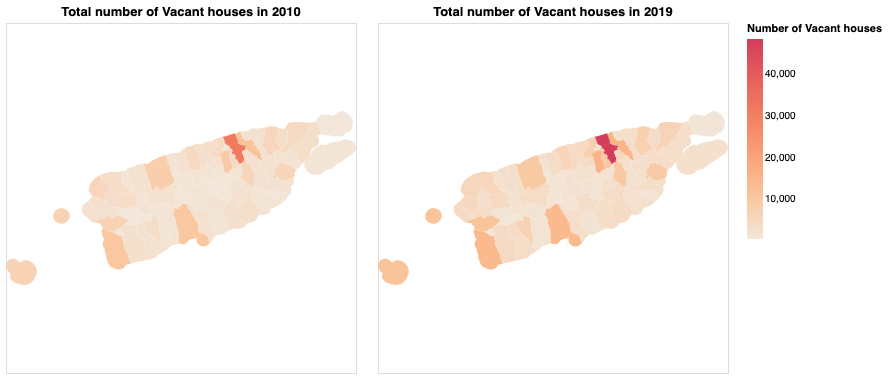

Puerto Rico is expected to face another series of hurricanes this year. After Hurricane Maria in 2017, Puerto Rico saw an exodus of people to the United States as a result of wide-scale destruction.
For those still in Puerto Rico, a number of critical facilities and infrastructure are still lacking, causing people to continue migrating even months after Maria. Now there are thousands of abandoned homes in the region, with the population dropping dramatically.
This story will look at the various risks still faced by Puerto Rico, including hurricane risk, incomplete infrastructure rebuilding, coastal flood risk and so on.
Why does this story matter now?
Hover over the map below to see details on the latest earthquakes in Puerto Rico. 2021 has seen an unusual jump in earthquakes, and is expected to meet a difficult hurricane season.
My role in reporting on this story
My research on Puerto Rico for another story brought me to the topic of concerns of vast migration of Puerto Ricans to mainland USA.
Through analysis of US census data (American Community Survey 5-year period) over 10 years, I quickly spotted that there was a rise in the number of vacant houses in every Puerto Rican municipality, a good indication of migration.
You can find my code here.

Next Steps
To bring this story to life, we will use Altair and other Python tools to overlay housing unit data with areas prone to earthquakes and floods. Using Mapbox and Altair, we intend on creating a scrolly-piece of the problems faced by those left behind from the migration.